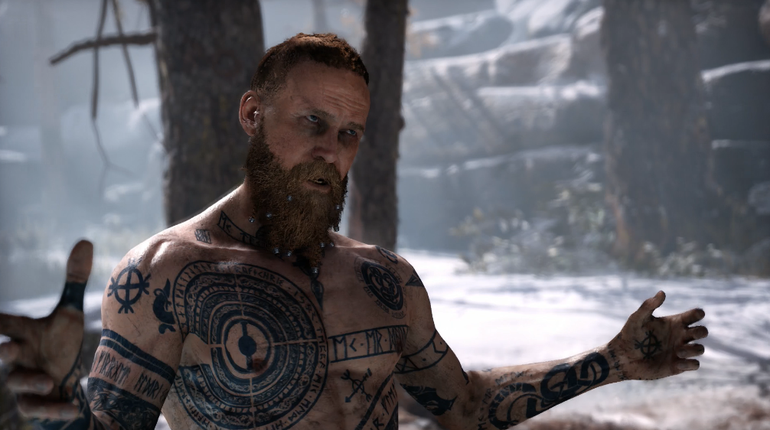
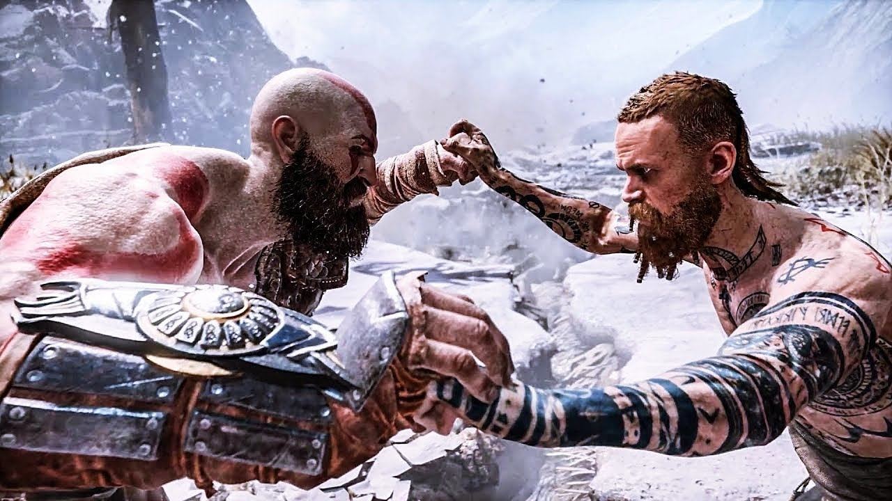
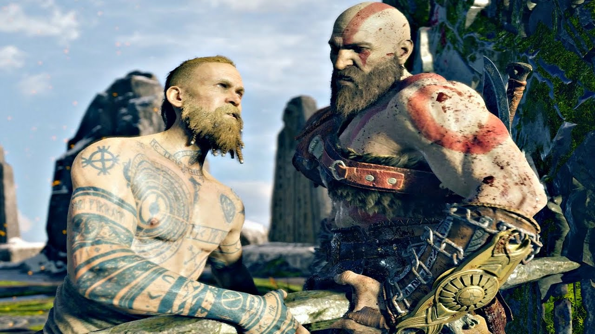
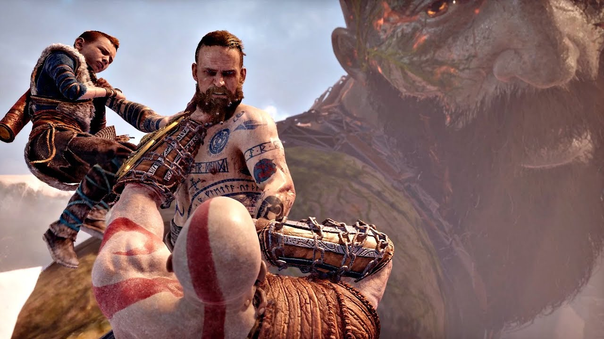

Baldur
 Baldur responde à ordem de Odin de caçar Kratos, visitando-o em sua própria casa. Kratos não quer lutar, apesar de Baldur continuamente insultá-lo e até dar um soco nele, mas, eventualmente, Kratos cede e derruba Baldur no chão. Quando Kratos tenta ordená-lo a sair, Baldur exclama "Minha vez!" e dá um soco que manda Kratos voando por cima da casa. Os dois começam a lutar brutalmente e Kratos é capaz de dominar Baldur, mas o último parece não ser afetado pelos socos e revela não sentir dor, exclamando que ele vai matar Kratos após os espartano se cansar. Kratos aparentemente mata Baldur quebrando seu pescoço, fazendo-o cair em uma ravina que os dois criaram durante a luta.
Devido à sua bênção, ele apenas desmaiou com o ataque de Kratos. Juntando seus sobrinhos, Magni e Modi, eles visitam o embaixador dos deuses nórdicos, Mímir, na esperança de ganhar o conhecimento de Kratos e seu filho. No entanto, eles não chegam a lugar nenhum, já que Mimir não sabe quem são os dois e é incapaz de localizá-los devido a uma runa ocultante posta por uma bruxa. Baldur diz a ele que mandaria sua mensagem a Odin se ele os ajudasse, mas Mímir, não impressionado, diz aos três para irem embora.

Mais tarde, quando Kratos, Mímir e Atreus se preparam para ir a Jötunheim, Baldur os embosca, ganhando vantagem sobre Kratos e incitando Atreus a atacá-lo. Baldur se diverte ao ver Atreus atacando seu pai após Kratos tentar mantê-lo fora da luta. Atreus, excessivamente confiante, ataca Baldur, mas não consegue matá-lo. Baldur esfaqueia Atreus, deixando o garoto inconsciente, e pula do penhasco, pousando em um dragão. Kratos intercepta-os e luta contra Baldur, que finalmente chega à sala de viagem entre reinos e põe Asgard como destino, na esperança de trazer todos os Aesir contra Kratos. Depois de outra luta brutal, Kratos altera o destino para Helheim, enviando-os para o Reino dos Mortos. Baldur se depara com uma ilusão em forma de uma memória sua, especificamente a vez em que ele confrontou sua mãe, Freya, sobre o feitiço que ela colocou sobre ele. Como o feitiço o tornava invulnerável, ele não podia sentir mais nada, nem dor, nem prazer. Incapaz de saborear durante as festas ou sentir prazer das mulheres, Baldur furiosamente agride sua mãe, apesar das razões e motivos dela. Kratos e Atreus, escondendo-se, testemunham Baldur agindo irracionalmente frente a ilusão e aprendem sobre sua conexão com Freya.

Depois de encontrar uma maneira de escapar de Helheim, Baldur toma conhecimento da jornada de Kratos ao estômago da Serpente do Mundo e, assim, fere a serpente gigante para expulsar os dois. Emergindo das águas geladas do lago, Baldur encontra sua mãe pela primeira vez em décadas. Apesar do tempo separados, Baldur permanece ressentido com ela sobre o feitiço que o tornou invulnerável. Enquanto Freya permanece com remorso, Baldur é consumido pelo ódio por ela. Ele tenta atacá-la, mas Kratos entra em seu caminho, levando a outra luta entre eles. Freya tenta intervir enredando os dois com raízes, acreditando que ela pode conversar com Baldur, mas seus feitiços são ineficazes quando os dois se libertam.
Durante uma pequena pausa na luta, Baldur domina Kratos e tenta dar um soco nele, mas Atreus intervém. Kratos fica horrorizado, acreditando que Atreus está ferido, mas o garoto diz que aquilo em seu peito não é o sangue dele; na verdade, é o sangue de Baldur. Baldur deu um soco no visco que Kratos havia amarrado no arco de Atreus depois de a corda ter sido temporariamente arrebentada durante a jornada. Baldur regozija ao sentir dor enquanto Freya, horrorizada, observa.
Estando vulnerável novamente, Kratos e Atreus retomam sua batalha contra Baldur, que deleita-se com a dor que sente. Ele agradece aos dois por sua ajuda, alegando que nem mesmo o próprio Odin havia conseguido remover sua "maldição". Freya tenta intervir novamente, revivendo o gigante Thamur para tal fim. Seus esforços terminam em fracasso quando Atreus chama a Serpente do Mundo para matar o gigante. De volta aonde eles começaram, Kratos espanca Baldur, mas poupa sua vida a pedido de Atreus.

Baldur confronta sua mãe mais uma vez. Freya implora a seu filho para encontrar compreensão em suas ações, na tentativa de fazer as pazes com ele. Baldur se recusa a perdoá-la e quase a estrangula até a morte, mas Kratos intervém novamente. Citando seu pai, Kratos diz que "o ciclo termina aqui" e quebra o pescoço de Baldur pela segunda vez, matando-o de verdade. Suas últimas palavras são: "Neve..."
Freya fica devastada e enfurecida com a morte dele, apesar de Baldur ter tentado matá-la. Ela jura vingar-se de Kratos, mas leva o corpo de seu filho no colo e desaparece.